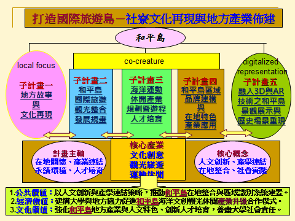
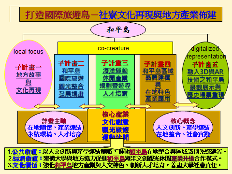
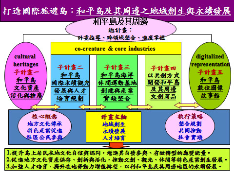
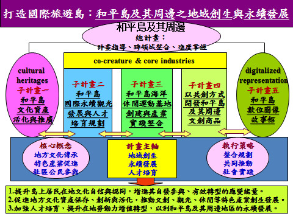

壹、計畫宗旨與簡介
一、緣起與宗旨
基隆在臺灣進出口貿易的歷史上扮演著重要角色，亦為臺灣遠近洋漁業的重心之一。唯隨著貨輪噸數擴增，國際航運型態改變，使基隆港市發展大受影響，濱海社區也因漁業、造船等產業榮景不再，而面臨轉型需要。故基隆港市如何創新與轉型，再現風華，乃為公私部門、在地社群、產學機構等共同所關注。近年來，基隆港市逐漸由國際貿易商港轉型為國際郵輪停泊的海洋觀光旗鑑港，附近濱海社區也逐漸發展海洋觀光、運動休閒活動，反映基隆港市面臨人文發展、產業創新以永續生存的轉型挑戰；此其中，海洋觀光旅遊產業被寄予厚望。然而，基隆雖擁有豐富的海洋自然人文觀光資源，唯據交通部觀光局觀光遊憩據點統計資料，基隆地區在觀光產業上仍有很大的加強空間。
歸納當前基隆地區發展的關鍵議題與需求在於：
1.國際郵輪旅客的臨岸接待需求
2.基隆港市面臨轉型挑戰
3.當地觀光旅遊產業必須升級
4.沒落濱海社區需要再造活化以助產業升級、永續宜居。
針對以上議題，本計畫宗旨在於：藉由大學社會責任實踐計畫的執行，型塑「打造和平島為國際旅遊島」的願景，針對和平島獨特的海洋環境、自然景觀以及具有大航海時代以降豐富的歷史人文底蘊，著眼於地方文化資產保存活化、發展觀光旅遊、運動休閒、文創設計等互以為力的產業以及數位人文科技應用，建立溝通平臺，加強與社區居民、地方政府對話，增進產學合作，提升地方文化與人才培育效能。
二、第一期計畫（107-108）：「打造國際旅遊島-社寮文化再現與地方產業佈建」
（一）計畫理念與推動目標
第一期計畫以「人文創新、產學連結、在地整合、社會實踐」核心概念，確立「在地關懷、產業連結、永續環境、人才培育」計畫主軸，並落實公民參與、產業連結、人才培育等具體施作過程，強化社會整合實踐，透過社寮文化再現與地方產業佈建，將和平島打造為國際旅遊島，共創和平島地域新價值，俾利地方特色產業的發展，使之成為基隆發展海洋文創、觀光、運動休閒產業的基地。藉此建構整合大學與地方公私部門以及社群團體的合作機制，以利人才培育、提升社區發展與居民共識，增加可執行性，以達兼顧公共價值、經濟價值、文化價值的總體目標。
第一期計畫以「人文創新、產學連結、在地整合、社會實踐」核心概念，確立「在地關懷、產業連結、永續環境、人才培育」計畫主軸，並落實公民參與、產業連結、人才培育等具體施作過程，強化社會整合實踐，透過社寮文化再現與地方產業佈建，將和平島打造為國際旅遊島，共創和平島地域新價值，俾利地方特色產業的發展，使之成為基隆發展海洋文創、觀光、運動休閒產業的基地。藉此建構整合大學與地方公私部門以及社群團體的合作機制，以利人才培育、提升社區發展與居民共識，增加可執行性，以達兼顧公共價值、經濟價值、文化價值的總體目標。
（二）計畫架構及計畫成員
計畫架構

計畫架構

計畫成員
（1）本計畫總主持人：由副校長莊季高教授擔任，共同討論計畫規模、性質方向，並裁定施作場域、協調本計畫與C類的執行範圍以達互補而不重疊之效。
（2）本計畫協同主持人：張文哲教務長，共同討論計畫規模、性質方向，並整合B類C類之計畫行政、產學合作與教學資源。
（3）本計畫協同主持人：人文社會科學院院長黃麗生教授，擔任本計畫聯絡人，負責整合並推動各子計畫共同執行項目，藉而導引PDCA機制之落實，其他項目包含總體計畫之規劃，以及子計畫一項目(詳見下表)
（4）本計畫其他協同主持人／子計畫主持人：（參見下表）
（1）本計畫總主持人：由副校長莊季高教授擔任，共同討論計畫規模、性質方向，並裁定施作場域、協調本計畫與C類的執行範圍以達互補而不重疊之效。
（2）本計畫協同主持人：張文哲教務長，共同討論計畫規模、性質方向，並整合B類C類之計畫行政、產學合作與教學資源。
（3）本計畫協同主持人：人文社會科學院院長黃麗生教授，擔任本計畫聯絡人，負責整合並推動各子計畫共同執行項目，藉而導引PDCA機制之落實，其他項目包含總體計畫之規劃，以及子計畫一項目(詳見下表)
（4）本計畫其他協同主持人／子計畫主持人：（參見下表）
| 計畫職務/姓名 | 單位/職稱 | 主要學經歷及專長 | 參與本計畫之主要工作項目 |
|---|---|---|---|
|
子計畫一 主持人 黃麗生 |
國立臺灣海洋大學人文社會科學院院長 海洋文化研究所專任教授 海洋文創設計產業學系合聘教授 |
學/經歷：國立臺灣師範大學歷史研究所博士/國立臺灣海洋大學人文社會科學院院長
專長：儒學研究、明清至近代蒙古史、歷史理論與歷史教育、海洋文化研究、客家研究、東亞思想與文化交流 |
（一）負責規劃總體研究架構與意義論述，構思計畫的研究方向、陳述研究背景、決定總體目標、研究要點與標的，訂定總計畫名稱以及整體研究分工合作架構，以期各團隊成員既能發揮其學術專長，呈現各子計畫的特色又能強化議題連結的相關性以及互為補充整合作用。 （二）規劃子計畫項目，召集跨領域研究團隊成員，並整合校內外資源、連結執行人力與計畫內容，推動與鄰近公民營單位合作溝通以利整體計畫執行，並規劃、協調、彙整各子計畫執行項目與成果展現。 （三）決定子計畫1名稱、執行項目、計畫成員與預期目標，並負責各項目文化內容與再現的整合與詮釋。 |
|
子計畫一 共同主持人 王俊昌 |
國立臺灣海洋大學 海洋文化所助理教授 |
學/經歷：國立中正大學歷史研究所博士/2007-2008年基隆粉料廠歷史文化調查與測繪案計畫主持人、2008-2009基隆市公有古物清查計畫主持人 專長：臺灣海洋史、海洋經貿史、文化資產 |
透過人文與自然資源再檢視、地方故事的蒐集、與在地傳統產業對話、以及地域空間加值：文化再現點之實作為基礎，提供其他子計畫「旅遊創意加值」服務。 |
|
子計畫一 共同主持人 賴維均 |
華梵大學美術暨文創系專任講師 國立臺灣海洋大學文創設計系兼任助理教授級專業教師 |
學/經歷：國立臺北科技大學設計學院博士班、美國紐約長島大學藝術碩士/國際博物館協會ICOM 國際區域博物館委員會ICR 現任理事 專長：文創產業研究、區域博物館、地方文化館、社區營造、文化資產、文化行政與藝術管理、藝術創作、文化傳播理論 |
將重新審視整理挑選於和平島發展文化國際觀光有關服務產業、文化產業、社區產業、觀光產業所需要的文化底蘊的文本以及產業化可行性的評估與詮釋；整個歷年國際層疊的文化脈絡與文化資產，將進行有層次以及可產業化的詮釋與操作，作為與子計畫4、子計畫5 的重要依據以及基礎。 |
|
子計畫二 主持人 嚴佳代 |
國立臺灣海洋大學教育研究所助理教授 |
學/經歷：國立中央大學人力資源所博士/基隆市政府文化局「基隆市文創(含觀光廊帶)相關資源盤整、調查及規劃運用」計畫協同主持人。 專長：人力資源管理、職能管理、海洋人才培育、海洋教育 |
本計畫以基隆市海洋觀光產業發展策略評估與規劃為主，與基隆市旅遊聯盟促進會共同推動基隆海洋觀光產業發展，實踐海大推動地方海洋觀光特色發展之社會責任，本計畫基本主軸為 (1)發展基隆海洋觀光特色、(2)從產品導向規劃轉為消費者導向規劃(3)關注產業及環境永續發展。從三個主軸透過地方產業及資源整合進行基隆海洋觀光產業發展策略與規劃。 |
|
子計畫三 主持人 曹校章 |
國立臺灣海洋大學共同教育中心教授 |
學/經歷：國立臺灣師範大學體育研究所博士/106年度教育部體育署補助-2016獨木舟/SUP體驗營計畫主持人 專長：海洋運動觀光、海洋休閒運動、海洋休閒運動行銷、海洋休閒運動經濟分析規劃 |
檢視基隆市海洋休閒運動產業的現況與需求，透過多面向審視後，整合產官學、法規與政策協調暨海洋休閒運動體驗活動與遊程創出，並透過子計畫1、2、4、5的相關產、官、學、研的專業技能、知識與實務導入，創發出海洋休閒運動體驗、遊程規劃、人才培育暨新產業合作、訓練與推展之產業佈建策略。 |
|
子計畫四 主持人 莊育鯉 |
國立臺灣海洋大學海洋文創設計產業系助理教授 |
學/經歷：日本公立函館未來大學系統情報科學研究科/媒體設計領域博士/崇右技術學院視覺傳達設計系助理教授兼系主任、永豐餘企業竹本堂文化事業公司包裝設計組設計 專長：視覺傳播設計、地域振興、地域特色產業文創設計 |
透過計畫1的資源盤點來發展地方產業的視覺符碼，建立具有地方認同與地域代表符號之品牌規劃。以整體地域品牌為規劃主軸將計畫1所盤點的經濟價值的實體資產，透過計畫5AR的擴增實境顧客體驗來深化建構和平島地方品牌的知識認同，並將品牌系統應用在計畫2，協助觀光場域中產業商品與場域價值的提升；與計畫3 創造有價值的體驗認同符碼，達成和平島場域新價值的創生。 |
|
子計畫四 共同主持人 李奕璋 |
國立臺灣海洋大學海洋文創設計產業系助理教授 |
學/經歷：英國蘭卡斯特大學博士/台中科技大學創意商品設計專案助理教授，高點國際設計公司設計師 專長：文創商品設計、工業設計、設計決策研究、新產品開發與創新 |
參與子計畫4「和平島區域品牌建構與在地特色產業應用」，負責地域特色商品化。擬透過子計畫1的文史、地域、環境、資源等盤點調查所建構之社寮島產業資訊，連結子計畫2、3、5的相關產、官、學、研的專業技能與知識，提供本子計畫建置與執行在地特色商品化。 |
|
子計畫四 共同主持人 (who) |
國立臺灣海洋大學海洋文創設計產業系系主任 |
學/經歷：國立臺灣師範大學國文研究所博士/共同教育中心教授、通識教育中心國文組副教授 專長：海洋文學、古典詩詞、美學 |
負責地域特色品牌故事的取材與思考脈絡建構，連接地方與居民對品牌意象的相互依存關係。同時藉由品牌故事的敘事的結構發展，應用地域特色產業的文創商品發展，連結品牌價值與文創商品的創意展現。 |
|
子計畫五 主持人 謝君偉 |
國立臺灣海洋大學資訊工程學系教授 |
學/經歷：國立中央大學資訊工程博士/本校資工系系主任。 專長：影像視訊處理、圖像識別、深度學習、3D列印、虛擬實境VR擴增實境AR，電腦視覺 |
藉由3D、人工智慧與AR技術，融入不同時代的場景，運用虛擬實境VR與擴增實境AR等最新數位科技，將和平島的文化與歷史，做更深入的互動空間轉換，營造更精緻的文化資產內容呈現，成為基隆的文化品牌，並更進一步創發出互動擴增實境AR文化體驗與電遊等產業創造加值商機。 |
|
子計畫五 代理主持人 林士勛 |
國立臺灣海洋大學教育研究所助理教授 |
學/經歷：國立成功大學資訊工程博士/國立成功大學資訊工程研究所博士後研究員 專長：電腦圖學、資訊視覺化 |
負責以2D/2.5D技術協助設計與開發和平島數位圖像故事館之互動式網頁視覺化呈現。 |
（三）計畫內容與效益
1. 跨領域整合型計畫：
本計畫透過本校所組織跨領域整合團隊，藉由五個子計畫的執行，強化大學與社區的互動與合作，增進與居民對話和產學合作；並配合上位政策，整合橫向資源，進行前瞻規劃，推動和平島國際旅遊產品及品牌形象，以利促進和平島地區的產業升級與永續發展，以達地方文化提升與在地產業人才培育的理想。
五個子計畫分別為：
（1）「地方故事與文化再現」
（2）「和平島國際旅遊觀光整合發展規劃」
（3）「海洋運動休閒產業規劃暨遊程人才培育」
（4）「和平島區域品牌建構與在地特色產業應用」
（5）「融入3D與AR技術之和平島景觀展示與歷史場景重現」等
2.落實公民參與，深化社會實踐方案：
（1）建立溝通平臺，連結產、官、學、社資源，增進各界對話，使和平島轉型為「國際旅遊島」成為普遍共識
（2）著重研發、規劃，以協助社區爭取資源局部試辦並進行政策建議
（3）強化融入課程與產學合作以培育人才
（4）以大學第三方客觀角度，協助公私部門開發水域活動
3.各子計畫執行效益：
（1）呈現和平島自然人文景觀與文化底蘊
（2）推動和平島國際旅遊產品及品牌形象
（3）推展海洋休閒運動體驗、遊程規劃與人才培育
（4）塑造和平島地方意象與品牌並開發文創商品
（5）以3D&AR體驗科技提升在地文化產業價值
1. 跨領域整合型計畫：
本計畫透過本校所組織跨領域整合團隊，藉由五個子計畫的執行，強化大學與社區的互動與合作，增進與居民對話和產學合作；並配合上位政策，整合橫向資源，進行前瞻規劃，推動和平島國際旅遊產品及品牌形象，以利促進和平島地區的產業升級與永續發展，以達地方文化提升與在地產業人才培育的理想。
五個子計畫分別為：
（1）「地方故事與文化再現」
（2）「和平島國際旅遊觀光整合發展規劃」
（3）「海洋運動休閒產業規劃暨遊程人才培育」
（4）「和平島區域品牌建構與在地特色產業應用」
（5）「融入3D與AR技術之和平島景觀展示與歷史場景重現」等
2.落實公民參與，深化社會實踐方案：
（1）建立溝通平臺，連結產、官、學、社資源，增進各界對話，使和平島轉型為「國際旅遊島」成為普遍共識
（2）著重研發、規劃，以協助社區爭取資源局部試辦並進行政策建議
（3）強化融入課程與產學合作以培育人才
（4）以大學第三方客觀角度，協助公私部門開發水域活動
3.各子計畫執行效益：
（1）呈現和平島自然人文景觀與文化底蘊
（2）推動和平島國際旅遊產品及品牌形象
（3）推展海洋休閒運動體驗、遊程規劃與人才培育
（4）塑造和平島地方意象與品牌並開發文創商品
（5）以3D&AR體驗科技提升在地文化產業價值
（四）執行成果與反思
1. 總計畫成果－共同執行具有PDCA機制性質項目：
（1）每月出刊「潮遊和平島」電子報
（2）舉辦跨領域焦點對談4場
（3）舉辦海洋文化觀光研習營2場
（4）舉辦工作坊1場與成果展6場
（7）實施跨領域整合課群等
2. 各子計畫成果
子計畫一：
（1）人文與自然的再檢視─針對和平島人文與自然資源進行爬梳整理，撰寫〈和平島歷史總綱〉、〈和平島地理總綱〉以及〈基隆和平島多元民族的歷史敘事與文化遺產〉、〈1626西班牙佔領以前漢人移居基隆和平島的歷史進程與性質〉、〈明清時期雞籠的航路敘事與澎湖針路簿『海不揚波』〉等論文。
（2）地方故事蒐集─完成和平島文獻蒐集及爬梳整理歷史故事；訪問耆老蒐集地方故事、諺語、傳說、神話等。
（3）與在地傳統產業對話─與在地漁業人士交流與對談，進行慢魚運動的推廣。
（4）文化再現與空間加值─完成西班牙修道院遺址展現與平寮里漁業生活文化展示設計，以及八尺門線產業文化現場再現的規劃。
（5）編印《和平島人文采風》深度旅遊導覽手冊等。
子計畫二：
（1）旅行社旅遊需求分析─完成旅客(2次)、居民、旅行社調查。
（2）景點中英文導覽內容彙整─製作中英文導覽手冊與旅遊摺頁。
（3）商家品牌故事包裝─完成40個景點與故事中英文介紹，採訪12個特色商家並製作影片。
（4）旅遊路線整合服務規劃─規劃6條主題路線，並製作旅遊摺頁。
（5）特色活動整合包裝─規劃16個特色活動產品。
（6）旅遊數位服務規劃─建立和平島大小事社團與和平島影音平台等。
（7）規劃和平島周遊卷；
（8）辦理業者媒體踩線團；
（9）辦理環境教育課程。
子計畫三：
（1）和平島海洋運動休閒產業場域調查─完成和平島海域與和平島公園海洋休閒運動探勘與調查。
（2）開發與可操作性評估規劃─規劃和平島海域與和平島公園海洋休閒運動活動辦理場域與內容。
（3）跨組織、跨單位、跨產業之整合法規與政策協調─整合北海岸及觀音山國家風景區、宏岳國際、采堤健康管理在和平島公園之經營。
（4）海洋休閒運動體驗活動與遊程創出─規劃4條海洋獨木舟遊程主題路線，並製作旅遊介紹，放置於潛能無限探索海洋粉專頁。
（5）海洋休閒運動體驗活動與遊程實務操作人才培育─獨木舟技能培力25人、水肺潛水培力10人、救難艇筏培力30人。
子計畫四：
（1）地域特色產業資源之彙整與研析─完成自然生態、歷史人文等文獻之彙整、建置與分析。
（2）地域特色產業資源之圖像發展─將彙整之文字與圖片以設計軟體轉換為圖像。
（3）地域特色產業主意象（品牌）創出─完成5個較具代表性的和平島品牌圖案。
（4）地域特色產業意象應用設計─完成5套具和平島特色意象之應用設計。
（5）地域品牌識別系統建立─就已完成之品牌，應用設計出和平島識別系統，分基礎設計、延伸應用兩大類。
子計畫五：
使用導覽app的AR擴充實境技術讓遊客透過觀察與互動的操作方式了解當地過去人文活動分布變遷情形，重現當多元歷史場景與記憶；使用Unreal Engine 4建構VR與第三人稱視角遊戲，藉此增加年輕世代的參與。
1. 總計畫成果－共同執行具有PDCA機制性質項目：
（1）每月出刊「潮遊和平島」電子報
（2）舉辦跨領域焦點對談4場
（3）舉辦海洋文化觀光研習營2場
（4）舉辦工作坊1場與成果展6場
（7）實施跨領域整合課群等
2. 各子計畫成果
子計畫一：
（1）人文與自然的再檢視─針對和平島人文與自然資源進行爬梳整理，撰寫〈和平島歷史總綱〉、〈和平島地理總綱〉以及〈基隆和平島多元民族的歷史敘事與文化遺產〉、〈1626西班牙佔領以前漢人移居基隆和平島的歷史進程與性質〉、〈明清時期雞籠的航路敘事與澎湖針路簿『海不揚波』〉等論文。
（2）地方故事蒐集─完成和平島文獻蒐集及爬梳整理歷史故事；訪問耆老蒐集地方故事、諺語、傳說、神話等。
（3）與在地傳統產業對話─與在地漁業人士交流與對談，進行慢魚運動的推廣。
（4）文化再現與空間加值─完成西班牙修道院遺址展現與平寮里漁業生活文化展示設計，以及八尺門線產業文化現場再現的規劃。
（5）編印《和平島人文采風》深度旅遊導覽手冊等。
子計畫二：
（1）旅行社旅遊需求分析─完成旅客(2次)、居民、旅行社調查。
（2）景點中英文導覽內容彙整─製作中英文導覽手冊與旅遊摺頁。
（3）商家品牌故事包裝─完成40個景點與故事中英文介紹，採訪12個特色商家並製作影片。
（4）旅遊路線整合服務規劃─規劃6條主題路線，並製作旅遊摺頁。
（5）特色活動整合包裝─規劃16個特色活動產品。
（6）旅遊數位服務規劃─建立和平島大小事社團與和平島影音平台等。
（7）規劃和平島周遊卷；
（8）辦理業者媒體踩線團；
（9）辦理環境教育課程。
子計畫三：
（1）和平島海洋運動休閒產業場域調查─完成和平島海域與和平島公園海洋休閒運動探勘與調查。
（2）開發與可操作性評估規劃─規劃和平島海域與和平島公園海洋休閒運動活動辦理場域與內容。
（3）跨組織、跨單位、跨產業之整合法規與政策協調─整合北海岸及觀音山國家風景區、宏岳國際、采堤健康管理在和平島公園之經營。
（4）海洋休閒運動體驗活動與遊程創出─規劃4條海洋獨木舟遊程主題路線，並製作旅遊介紹，放置於潛能無限探索海洋粉專頁。
（5）海洋休閒運動體驗活動與遊程實務操作人才培育─獨木舟技能培力25人、水肺潛水培力10人、救難艇筏培力30人。
子計畫四：
（1）地域特色產業資源之彙整與研析─完成自然生態、歷史人文等文獻之彙整、建置與分析。
（2）地域特色產業資源之圖像發展─將彙整之文字與圖片以設計軟體轉換為圖像。
（3）地域特色產業主意象（品牌）創出─完成5個較具代表性的和平島品牌圖案。
（4）地域特色產業意象應用設計─完成5套具和平島特色意象之應用設計。
（5）地域品牌識別系統建立─就已完成之品牌，應用設計出和平島識別系統，分基礎設計、延伸應用兩大類。
子計畫五：
使用導覽app的AR擴充實境技術讓遊客透過觀察與互動的操作方式了解當地過去人文活動分布變遷情形，重現當多元歷史場景與記憶；使用Unreal Engine 4建構VR與第三人稱視角遊戲，藉此增加年輕世代的參與。
3. 問題與反思
經由第一期(107-108)兩年的執行經驗，計畫團隊發現歸納和平島的文化再現、海洋觀光、運動休閒、文創設計等特色產業的佈建與永續發展，面臨以下問題：
（1）大學社會責任與計畫定位問題：有關文化再現與空間增值之計畫執行，因場域多為居民私有或政府機關管轄，必須獲得居民同意和公權力支持才有可能，故本計畫只能著重研發、規劃、推廣風氣、政策建議以及協助社區爭取資源局部試辦。
（2）政府、產業與在地社群整合問題：和平島發展觀光有待地方政府與中央政府整合規劃；而且地方人事複雜，不易形成共識，並欠缺組織團體彙整資源，與公部門有效溝通整合推動。
（3）法規與政策問題：和平島水域活動受到法規與契約限制，唯有釐清開放水域經營權、使用權，大學方能協調各方共同開發。
（4）本計畫塑造和平島意象品牌、開發文創產品深受肯定，但要發展當地文創產業仍有待更多的政策、資金和人力投入。
（5）後續具體問題有待第二期計畫的申請與執行：
1）和平島歷史文化資產尚待釐清蒐整與開發利用；
2）旅客調查與國際觀光資源尚待盤整規劃；
3）和平島水域的管轄權以及使用、經營權仍有待釐清；
4）和平島社區居民與相關產業尚缺共識。
5）在地相關產業人力資源不足，有待積極培育補充。
經由第一期(107-108)兩年的執行經驗，計畫團隊發現歸納和平島的文化再現、海洋觀光、運動休閒、文創設計等特色產業的佈建與永續發展，面臨以下問題：
（1）大學社會責任與計畫定位問題：有關文化再現與空間增值之計畫執行，因場域多為居民私有或政府機關管轄，必須獲得居民同意和公權力支持才有可能，故本計畫只能著重研發、規劃、推廣風氣、政策建議以及協助社區爭取資源局部試辦。
（2）政府、產業與在地社群整合問題：和平島發展觀光有待地方政府與中央政府整合規劃；而且地方人事複雜，不易形成共識，並欠缺組織團體彙整資源，與公部門有效溝通整合推動。
（3）法規與政策問題：和平島水域活動受到法規與契約限制，唯有釐清開放水域經營權、使用權，大學方能協調各方共同開發。
（4）本計畫塑造和平島意象品牌、開發文創產品深受肯定，但要發展當地文創產業仍有待更多的政策、資金和人力投入。
（5）後續具體問題有待第二期計畫的申請與執行：
1）和平島歷史文化資產尚待釐清蒐整與開發利用；
2）旅客調查與國際觀光資源尚待盤整規劃；
3）和平島水域的管轄權以及使用、經營權仍有待釐清；
4）和平島社區居民與相關產業尚缺共識。
5）在地相關產業人力資源不足，有待積極培育補充。
三、第二期計畫（109-111）：「打造國際旅遊島─和平島及其周邊的地域創生與永續發展」
（一）計畫理念與推動目標
本計畫第二期（109-111）延續第一期計畫的願景，以地方創生、永續發展、人才培育為主軸，以兼顧地方文化傳承、特色產業促進以及社區公民參與為核心概念，以整合規劃、共同推動與社會實踐為策略。本期突顯的計畫主軸的理念「地域創生」，是指透過地方文化與特色產業發展，打造居民與區域產業共享價值、經濟提升、跨領域合作的創新經濟模式。其策略做法包含基礎產業活化、區域生活活化、地方產業改造、居民生活環境改造、歷史資產保存維護等。和平島擁有獨特的自然與人文資源，本計畫將文化資產、觀光旅遊、運動休閒、文創商品、數位再現等視為互以為力並有利於和平島地域創生的要素，期能結合人文與科技，連接產官學社資源，型塑和平島的人文意象並促進觀光休閒與文創特色產業，以利其邁向永續發展之路。
其計畫目標為：透過海洋文化資產活化、海洋觀光事業發展、海洋休閒產業促進、文創設計商品開發、地方文化數位再現等具體事項之推動，促進地方文化資產的保存創新活化，以及文創、觀光、休閒等特色產業的創生發展，加強人才培育提升在地勞動力的增值轉型，以利和平島及其周邊地區永續發展。
本計畫第二期（109-111）延續第一期計畫的願景，以地方創生、永續發展、人才培育為主軸，以兼顧地方文化傳承、特色產業促進以及社區公民參與為核心概念，以整合規劃、共同推動與社會實踐為策略。本期突顯的計畫主軸的理念「地域創生」，是指透過地方文化與特色產業發展，打造居民與區域產業共享價值、經濟提升、跨領域合作的創新經濟模式。其策略做法包含基礎產業活化、區域生活活化、地方產業改造、居民生活環境改造、歷史資產保存維護等。和平島擁有獨特的自然與人文資源，本計畫將文化資產、觀光旅遊、運動休閒、文創商品、數位再現等視為互以為力並有利於和平島地域創生的要素，期能結合人文與科技，連接產官學社資源，型塑和平島的人文意象並促進觀光休閒與文創特色產業，以利其邁向永續發展之路。
其計畫目標為：透過海洋文化資產活化、海洋觀光事業發展、海洋休閒產業促進、文創設計商品開發、地方文化數位再現等具體事項之推動，促進地方文化資產的保存創新活化，以及文創、觀光、休閒等特色產業的創生發展，加強人才培育提升在地勞動力的增值轉型，以利和平島及其周邊地區永續發展。
（二）計畫架構與各子計畫整合關聯
計畫架構

各子計畫整合關聯────本計畫的五個子計畫各有其不可或缺的性質與定位：
（1）子計畫一：統整地方文化資產（local heritages）並加以宣揚推廣，可提供子計畫2、3、4執行之旅遊觀光、運動休閒、文創產業三種核心產業共創再造(co-creature & core industries)以及子計畫五數位人文再現之內容與資源的加值應用。
（2）子計畫二：其他子計畫亦為子計畫二訂定國際永續觀光發展策略與人才培育規劃的重要依據。子計畫二也扮演串連其他子計畫得以充份實踐其價值的角色，如結合子計畫一將和平島文化資產轉化成觀光旅遊資源，也提供領隊、導遊、領團及教師解說資訊，以提高旅遊品質與深度；結合子計畫三、四將和平島海洋休閒運動在地文創產業納入永續觀光發展的整合策略方案；結合子計畫五設計相關套裝行程給國內外深度旅遊旅客及校外教學課程教案吸引學校進行體驗教學。
（3）子計畫三：透過子計畫1所建構之社寮島識別系統，提供本子計畫資源盤點之先導依據，以綜合北海岸暨觀音山國家風景處、基隆市政府漁業科、國立臺灣海洋大學、海洋運動業者整合、法規與政策協調暨海洋休閒運動體驗活動與遊程創出；並透過子計畫2、4、5相關產官學研專業技能、知識與實務導入，創發出海洋休閒運動體驗、遊程規劃、人才培育暨新產業合作、訓練與推展之產業佈建策略。
（4）子計畫四：子計畫一可提供地方文化的內容資源，將和平島地方歷史文化與庶民生活的特性，發展成具單一識別性的品牌效益，可使子計畫一的文化資產轉換為商品，並透過市場效應擴大文化傳承的廣度。子計畫四的定位是帶動地方特色商品創新，並制定由地方意象轉為地方品牌的核心策略，利於子計畫二國際永續觀光發展的推動以及子計畫三的資源分享與具體實踐。
（5）子計畫五：善用數位科技載體創新空間與文化再現的路徑（digitalized representation）建構和平島的數位圖像故事館，呈現和平島前世今生的歷史軌跡發展、空間景觀變遷和生活文化交融的內容與樣貌等成果，亦設有總計畫、其他子計畫、主題特展等欄目，以呈現本計畫共同執行項目以及各子計畫活動訊息與執行成果，以符合本計畫整體規劃、共同推動、社會實踐的執行策略，以利全計畫的整體宣傳、地方推廣與產業促進等。
計畫架構

各子計畫整合關聯────本計畫的五個子計畫各有其不可或缺的性質與定位：
（1）子計畫一：統整地方文化資產（local heritages）並加以宣揚推廣，可提供子計畫2、3、4執行之旅遊觀光、運動休閒、文創產業三種核心產業共創再造(co-creature & core industries)以及子計畫五數位人文再現之內容與資源的加值應用。
（2）子計畫二：其他子計畫亦為子計畫二訂定國際永續觀光發展策略與人才培育規劃的重要依據。子計畫二也扮演串連其他子計畫得以充份實踐其價值的角色，如結合子計畫一將和平島文化資產轉化成觀光旅遊資源，也提供領隊、導遊、領團及教師解說資訊，以提高旅遊品質與深度；結合子計畫三、四將和平島海洋休閒運動在地文創產業納入永續觀光發展的整合策略方案；結合子計畫五設計相關套裝行程給國內外深度旅遊旅客及校外教學課程教案吸引學校進行體驗教學。
（3）子計畫三：透過子計畫1所建構之社寮島識別系統，提供本子計畫資源盤點之先導依據，以綜合北海岸暨觀音山國家風景處、基隆市政府漁業科、國立臺灣海洋大學、海洋運動業者整合、法規與政策協調暨海洋休閒運動體驗活動與遊程創出；並透過子計畫2、4、5相關產官學研專業技能、知識與實務導入，創發出海洋休閒運動體驗、遊程規劃、人才培育暨新產業合作、訓練與推展之產業佈建策略。
（4）子計畫四：子計畫一可提供地方文化的內容資源，將和平島地方歷史文化與庶民生活的特性，發展成具單一識別性的品牌效益，可使子計畫一的文化資產轉換為商品，並透過市場效應擴大文化傳承的廣度。子計畫四的定位是帶動地方特色商品創新，並制定由地方意象轉為地方品牌的核心策略，利於子計畫二國際永續觀光發展的推動以及子計畫三的資源分享與具體實踐。
（5）子計畫五：善用數位科技載體創新空間與文化再現的路徑（digitalized representation）建構和平島的數位圖像故事館，呈現和平島前世今生的歷史軌跡發展、空間景觀變遷和生活文化交融的內容與樣貌等成果，亦設有總計畫、其他子計畫、主題特展等欄目，以呈現本計畫共同執行項目以及各子計畫活動訊息與執行成果，以符合本計畫整體規劃、共同推動、社會實踐的執行策略，以利全計畫的整體宣傳、地方推廣與產業促進等。
計畫成員
| 計畫核心執行團隊及跨校、跨界成員 | |||
|---|---|---|---|
| 計畫職務/姓名 | 單位/職稱 | 主要學經歷及專長 | 團隊成員之主要工作內容 |
|
1.計畫主持人 許泰文 |
國立臺灣海洋大學河海工程學系特聘教授 兼副校長 兼校長 |
學/經歷：國立成功大學水利及海洋工程研究所博士/國立臺灣海洋大學研發處研發長、海洋能源與政策研究中心中心主任、中華民國力學學會秘書長、中國土木水利工程學會水資源工程委員會主任委員。 專長：海岸開發與保育、海洋能源和策略、近岸水動力學、波潮流預報模式、風浪預報模式、海岸與地形變遷 |
領導整體計畫執行。協調總計畫共同執行事項。連結產官學界，整合校內外資源。 |
|
2.計畫共同主持人 兼子計畫五計畫主持人 黃麗生 |
國立臺灣海洋大學海洋文化研究所專任教授 海洋文創設計產業學系合聘教授 |
學/經歷：國立臺灣師範大學歷史研究所博士/國立臺灣海洋大學海洋文化研究所創所所長、人文社會科學院院長。 專長：儒學研究、明清至近代蒙古史、歷史理論與歷史教育、海洋文化研究、客家研究、東亞思想文化交流。 |
1.擔任本計畫聯絡人。 2.負責規劃總體計畫之名稱、主題、架構、目標以及共同執行項目，召集跨領域團隊並整合落實推動共同執行項目，進而導引PDCA機制之。 3.負責規劃子計畫五之名稱、主題、架構、目標、執行項目、策略方法、階段進程、召集跨領域團隊等並負責歷史軌跡發展、空間景觀變遷、生活世界交融等內容。 |
|
3.計畫協同主持人 兼子計畫一計畫主持人 王俊昌 |
國立臺灣海洋大學海洋文化研究所助理教授 |
學/經歷：國立中正大學歷史學系博士/中央研究院歷史語言研究所博士後研究、國立雲林科技大學文化資產維護學系兼任助理教授 專長：海洋史/海洋文化、區域研究、文化資產 |
負責規劃子計畫一之名稱、主題、架構、目標、執行項目、策略方法與階段進程等。其重點為： 1.針對和平島無形文化資產進行盤點、紀錄、推廣與傳承。 2.將其豐富的文化資產打造成各類旅遊亮點，並成為其他子計畫加值運用。 3.與地方政府相關局處合作，培力當地社群或返鄉青年，永續經營。 |
|
4.計畫協同主持人 兼子計畫二主持人 嚴佳代 |
國立臺灣海洋大學教育研究所助理教授 |
學/經歷：中國文化大學觀光系學士、碩士；國立中央大學人力資源管理研究所博士 /亞洲海洋教育者協會秘書長、臺灣永續鱻漁發展協會監事 專長：海洋教育、人力資源發展、職能管理、人力資源管理 |
負責規劃子計畫二之名稱、目標、架構、執行項目、策略方法與階段進程等。其執行重點為： 1.地方觀光產業人才培育； 2.國際海洋教育基地建構； 3.和平島整合行銷企劃。 |
|
5.計畫協同主持人 兼子計畫三主持人 曹校章 |
國立臺灣海洋大學共同教育中心教授 |
學/經歷：國立臺灣師範大學體育學系博士/國立臺灣海洋大學共教育中心體育教育組教授 專長：運動觀光、海洋休閒運動觀光、運動行銷策略與規劃 |
負責規劃子計畫三之名稱、主題、架構、目標、執行項目、策略方法、階段進程等，其執行重點為： 1.海洋休閒運動體驗與人才培力； 2.海洋休閒運動遊程商品開發與產業培力； 3.國際海洋運動休閒觀光與遊學體驗等。主要方向為培育海洋休閒運動產業人才孵育，開發具有國際海洋休閒運動水準之遊程 |
|
6.計畫協同主持人 兼子計畫四主持人 莊育鯉 |
國立臺灣海洋大學海洋文創設計產業學系助理教授 |
學/經歷：日本公立函館未來大學系統情報科學研究科/媒體設計領域博士/崇右技術學院視覺傳達設計系助理教授兼系主任 專長：視覺傳播設計、地域振興、地域特色產業文創設計 |
規劃子計畫四之名稱、主題、架構、目標、執行項目、策略方法、階段進程等，其三大階段進程為：現有產業意象提升、地景文化文創商品開發、歷史故事文創商品開發等。並負責發展地方產業視覺符碼、規劃整體地域品牌、盤點經濟價值的實體資產等。 |
|
7.計畫協同主持人 兼子計畫四共同主持人 顏智英 |
國立臺灣海洋大學共同教育中心教授、海洋文創設計產業學系合聘教授兼系主任 |
學/經歷：國立臺灣師大國文學系博士/本校海文所合聘教授、通識教育中心教師 專長：海洋文學、古典詩詞、美學。 |
負責子計畫四地域特色品牌故事的取材與思考脈絡建構，發展地域特色產業的品牌故事，連接地方與居民對品牌意象的相互依存關係，並應用到地域特色產業的文創商品發展，連結品牌價值與文創商品的創意展現。 |
|
8.計畫協同主持人 兼子計畫四共同主持人 李奕璋 |
國立臺灣海洋大學海洋文創設計產業學系助理教授 |
學/經歷：英國蘭卡斯特大學Design/Lancaster Institute for the Contemporary博士 /Autolegs Ltd(高爾夫球袋)產學合作計畫。Supanetics Ltd(表面肌電儀)產學合作計畫。 專長：文創商品設計、工業設計、設計決策研究、新產品開發與創新。 |
負責子計畫四地域特色商品化。擬透過子計畫一盤點調查文史、地域、環境、資源等所建構社寮島產業資訊，並連結各子計畫相關產、官、學、研的專業技能與知識，以建置與執行在地特色商品設計。 |
|
9.計畫協同主持人 兼子計畫五共同主持人 林士勛 |
國立臺灣海洋大學資訊工程學系 |
學/經歷：國立成功大學資訊工程研究所博士/國立成功大學資訊工程研究所博士後研究員 專長：電腦圖學、資訊視覺化 |
負責以2D/2.5D技術協助子計畫五設計與開發和平島數位圖像故事館之互動式網頁視覺化呈現。 |
| 外部合作單位夥伴 | |||
|---|---|---|---|
| 計畫職務/姓名 | 單位/職稱 | 主要學經歷及專長 | 團隊成員之主要工作內容 |
|
1.子計畫二協同主持人 翁進全 |
和平島公園營運宏岳國際董事長 | 經歷：基隆市旅遊聯盟促進會理事長、基隆市姐妹市促進會理事 | 協助子計畫四執行實務項目，連結產官社資源。 |
|
2.子計畫五協同主持人 姚開陽 |
躍獅整合娛樂股份有限公司顧問 |
學/經歷：天主教輔仁大學大眾傳播系第一屆畢業(1975)；美國華盛頓大學(UW)商學院科技管理課程暑期班(2005)；國立臺灣海洋大學海洋文化研究所碩士/躍獅整合娛樂公司創辦人、創意總監。 專長:電影編導﹑劇場與體驗系統研發﹑博物館及主題樂園設計﹑海事歷史研究﹑專欄與小說作者﹑漫畫與插畫創作﹑音樂創作﹑網站經營﹑航海等。 |
1.協助執行歷史軌跡發展、空間景觀變遷、生活世界交融等內容項目之執行。 2.負責相關圖像之的製作、蒐集與編輯。 3.協助內容面與數位技術面的銜接與呈現。 |
（三）計畫內容與效益
1. 總計畫
上述計畫主軸、核心概念、執行策略、計畫目標均為前期計畫的延伸與發展；各子計畫則是前期計畫架構的擴展與進階。總計畫旨在推動共同執行項目並建立PDCA機制，其計畫內容與關鍵績效指標為：
（1）定期工作會議(執行成效管控)：每月召開一次，討論總計畫共同執行項目進行事宜，以及各子計畫報告執行進度。
（2）「和平創生」電子期刊 (執行成效管控)：為各子計畫研究經驗與成果有效交流、即時分享研究資料、落實各子計畫之間整合。內容由各子計畫定期提供，由總計畫彙整。該期刊採電子報形式，僅限於本計畫團隊內部流通。累積之成果，亦可為每年計畫期末舉辦「論壇與成果展」以及各子計畫結案報告所需。預計每年4、7、10、12月底出刊。
（3）跨領域焦點對談(滾動式檢查修正/公民參與策略)：為各子計畫建構「議題連結」和「資源分享」平臺，每年舉辦1-2次。 1)各子計畫會報執行進度、分享成果、對談問題、交換意見、激盪思考。2)各子計畫邀請產、官、學、社等重要專業人士與居民與計畫團隊對談，以有效從不同角度蒐集重要資料，並將每一次活動內容摘要刊登於「和平創生電子期刊」，以饗團隊成員。「跨領域焦點對談」，由各子計畫會報執行進度、分享成果、對談問題、交換意見、激盪思考；並設特定議題，由各子計畫邀請專家學者蒞校對談。以便有效地從不同角度聽取意見、蒐集資料。
（4）創生增能實地考察(滾動式檢查修正/公民參與策略)：每年舉辦一次，考察地方創生實施成效卓著的縣市社區，以收交流借鏡之效。由計畫成員共同辦理，亦邀請和平島及其周邊社區居民、商家業者共同參與，以強化團隊整合，豐富計畫內容，提升社會實踐計畫成效。
（5）工作坊與成果展(產業連結與修正成果)：為便於計畫執行之成果呈現，增進計畫團隊與相關公私部門互動，提升社會實踐成效，總合計畫擬於每年 6、12 月初舉辦「工作坊與成果展」，其活動特色有三：1）邀請專家學者、相關社群與各子計畫人員座談。2）子計畫執行成果擇要會展，以饗產、官、學、社各界。藉此達到交流評論、理念傳播、成果呈現之效。3）增進市民自主參與、凝聚共識、與外界互動的動力與能量，提升執行成效。
（6）計畫課群整合：以課群協同教學方式整合計畫成員的課程教學，導引師生進入本計畫執行過程，以達培育人才目標。其具體作法：1）共同課程產官學社聯結講座：由課群召集人黃麗生教授規畫主持1至2場共同課程「總論講座」，由至少2門課程的班級共同上課。2）計畫課群工作坊：計畫教師相互到其他課程進行教學，促進教學活動交流，落實教學內容互補，至少與二位以上子計畫老師協同教學。3）實地考察與實作：聯合或個別課程進行。
第二期計畫的預期效益不但是前期的延續與擴展，並更強調務實長遠：
（1）提升島上居民的文化自信與認同，增進其自發參與、有效轉型的應變能量；
（2）促進地方文化資產的保存、創新與活化，推動文創、觀光、休閒等特色產業創生發展；
（3）加強人才培育，提升在地勞動力的增值轉型，以利和平島及其周邊地區的永續發展等。
1. 總計畫
上述計畫主軸、核心概念、執行策略、計畫目標均為前期計畫的延伸與發展；各子計畫則是前期計畫架構的擴展與進階。總計畫旨在推動共同執行項目並建立PDCA機制，其計畫內容與關鍵績效指標為：
（1）定期工作會議(執行成效管控)：每月召開一次，討論總計畫共同執行項目進行事宜，以及各子計畫報告執行進度。
（2）「和平創生」電子期刊 (執行成效管控)：為各子計畫研究經驗與成果有效交流、即時分享研究資料、落實各子計畫之間整合。內容由各子計畫定期提供，由總計畫彙整。該期刊採電子報形式，僅限於本計畫團隊內部流通。累積之成果，亦可為每年計畫期末舉辦「論壇與成果展」以及各子計畫結案報告所需。預計每年4、7、10、12月底出刊。
（3）跨領域焦點對談(滾動式檢查修正/公民參與策略)：為各子計畫建構「議題連結」和「資源分享」平臺，每年舉辦1-2次。 1)各子計畫會報執行進度、分享成果、對談問題、交換意見、激盪思考。2)各子計畫邀請產、官、學、社等重要專業人士與居民與計畫團隊對談，以有效從不同角度蒐集重要資料，並將每一次活動內容摘要刊登於「和平創生電子期刊」，以饗團隊成員。「跨領域焦點對談」，由各子計畫會報執行進度、分享成果、對談問題、交換意見、激盪思考；並設特定議題，由各子計畫邀請專家學者蒞校對談。以便有效地從不同角度聽取意見、蒐集資料。
（4）創生增能實地考察(滾動式檢查修正/公民參與策略)：每年舉辦一次，考察地方創生實施成效卓著的縣市社區，以收交流借鏡之效。由計畫成員共同辦理，亦邀請和平島及其周邊社區居民、商家業者共同參與，以強化團隊整合，豐富計畫內容，提升社會實踐計畫成效。
（5）工作坊與成果展(產業連結與修正成果)：為便於計畫執行之成果呈現，增進計畫團隊與相關公私部門互動，提升社會實踐成效，總合計畫擬於每年 6、12 月初舉辦「工作坊與成果展」，其活動特色有三：1）邀請專家學者、相關社群與各子計畫人員座談。2）子計畫執行成果擇要會展，以饗產、官、學、社各界。藉此達到交流評論、理念傳播、成果呈現之效。3）增進市民自主參與、凝聚共識、與外界互動的動力與能量，提升執行成效。
（6）計畫課群整合：以課群協同教學方式整合計畫成員的課程教學，導引師生進入本計畫執行過程，以達培育人才目標。其具體作法：1）共同課程產官學社聯結講座：由課群召集人黃麗生教授規畫主持1至2場共同課程「總論講座」，由至少2門課程的班級共同上課。2）計畫課群工作坊：計畫教師相互到其他課程進行教學，促進教學活動交流，落實教學內容互補，至少與二位以上子計畫老師協同教學。3）實地考察與實作：聯合或個別課程進行。
第二期計畫的預期效益不但是前期的延續與擴展，並更強調務實長遠：
（1）提升島上居民的文化自信與認同，增進其自發參與、有效轉型的應變能量；
（2）促進地方文化資產的保存、創新與活化，推動文創、觀光、休閒等特色產業創生發展；
（3）加強人才培育，提升在地勞動力的增值轉型，以利和平島及其周邊地區的永續發展等。
2. 各子計畫
（1）子計畫一「和平島文化資產活化與推廣」
1）計畫目標：
①與當地社群選定和平島無形文化資產中的北管傳統表演藝術、三府王爺海上遊江活動、漁業技藝三項進行記錄、保存與推廣。
②成果提供子計畫2、3、4執行之旅遊觀光、運動休閒、文創產業三種核心產業共創再造，以及子計畫5數位人文再現之內容與資源的加值應用，希冀打造出和平島之觀光亮點，實踐成為國際旅遊島之願景。
2）重點摘要：
①帶領同學進入和平島場域，透過紀錄使其瞭解無形文化資產保存的重要性，並提出推廣企畫案。
②引薦海大學生進入得義堂學習北管、媒合演出並出版北管導讀手冊。
③海上遊江祭儀紀錄及紀錄片製作；舉辦海上遊江工作坊。
④和平島漁業技藝的再現與創新。
3）預期效益：
①持續與其他進行地方創生的社區/團體交流。
②達到聯合國永續發展目標(SDGs):SDGs8、9，在2030年前，制定及實施政策，以促進永續發展的觀光業、創造就業、保留地方文化與產品；SDGs11、4，致力於全球的文化與自然遺產的保護上。
（1）子計畫一「和平島文化資產活化與推廣」
1）計畫目標：
①與當地社群選定和平島無形文化資產中的北管傳統表演藝術、三府王爺海上遊江活動、漁業技藝三項進行記錄、保存與推廣。
②成果提供子計畫2、3、4執行之旅遊觀光、運動休閒、文創產業三種核心產業共創再造，以及子計畫5數位人文再現之內容與資源的加值應用，希冀打造出和平島之觀光亮點，實踐成為國際旅遊島之願景。
2）重點摘要：
①帶領同學進入和平島場域，透過紀錄使其瞭解無形文化資產保存的重要性，並提出推廣企畫案。
②引薦海大學生進入得義堂學習北管、媒合演出並出版北管導讀手冊。
③海上遊江祭儀紀錄及紀錄片製作；舉辦海上遊江工作坊。
④和平島漁業技藝的再現與創新。
3）預期效益：
①持續與其他進行地方創生的社區/團體交流。
②達到聯合國永續發展目標(SDGs):SDGs8、9，在2030年前，制定及實施政策，以促進永續發展的觀光業、創造就業、保留地方文化與產品；SDGs11、4，致力於全球的文化與自然遺產的保護上。
（2）子計畫二「和平島國際旅遊島永續發展與人才培育」
1）計畫目標：與和平島公園及在地各領域專家打造國際海洋教育基地，並與基隆市民宿觀光文化發展協會共同辦理人才培訓與商家輔導課程，協助地方產品與服務升級國際化。帶領學生進入地方共同探討和平島發展問題，同時透過亞洲海洋教育者協會協助連結國際資源，引進國際學生與旅客深度體驗和平島人文歷史與自然景觀，並以此為方向協助地方產業升級，創造地方就業與帶動地方創生。
2）重點摘要：以「國際海洋教育基地建構」與「地方觀光產業人才培育」兩大方向，將和平島觀光景點產品服務進行國際化升級，推廣國內學生至和平島進行海洋教育體驗活動，同時規劃國際海洋教育遊學活動，並鼓勵青年與和平島在地居民利用和平島豐富的海洋資源開設國際化民宿與特色商家。
3）預期效益：以大學參與地方創生與永續發展計畫出發，透過課程帶領學生進入和平島了解和平島發展困境與提出解決方案，引導學生對和平島發展產生責任與使命。利用教育專業規劃環境永續之海洋教育課程與活動，辦理國內環境永續海洋教育遊學活動，讓更多學生進入和平島體驗豐富的人文歷史與自然環境景觀，以帶動地方商機。
1）計畫目標：與和平島公園及在地各領域專家打造國際海洋教育基地，並與基隆市民宿觀光文化發展協會共同辦理人才培訓與商家輔導課程，協助地方產品與服務升級國際化。帶領學生進入地方共同探討和平島發展問題，同時透過亞洲海洋教育者協會協助連結國際資源，引進國際學生與旅客深度體驗和平島人文歷史與自然景觀，並以此為方向協助地方產業升級，創造地方就業與帶動地方創生。
2）重點摘要：以「國際海洋教育基地建構」與「地方觀光產業人才培育」兩大方向，將和平島觀光景點產品服務進行國際化升級，推廣國內學生至和平島進行海洋教育體驗活動，同時規劃國際海洋教育遊學活動，並鼓勵青年與和平島在地居民利用和平島豐富的海洋資源開設國際化民宿與特色商家。
3）預期效益：以大學參與地方創生與永續發展計畫出發，透過課程帶領學生進入和平島了解和平島發展困境與提出解決方案，引導學生對和平島發展產生責任與使命。利用教育專業規劃環境永續之海洋教育課程與活動，辦理國內環境永續海洋教育遊學活動，讓更多學生進入和平島體驗豐富的人文歷史與自然環境景觀，以帶動地方商機。
（3）子計畫三「和平島海洋休閒運動基地創建與產業實踐整合」
1）計畫目標：維護和平島海底的清潔:讓珊瑚呼海洋休閒運動專業證照人才孵育基地建構計畫目標吸、讓魚兒游泳。集環保、教育、永續的理念，向海致敬。
2）重點摘要：舉辦勤前訓練使參加人員了解活動目的及注意事項並藉由潛水來清除海中廢料，是兼顧休閒娛樂及環保理念的活動。
3）預期效益：海洋與人類生活息息相關，但現今海洋卻受各種人為因素而污染嚴重。希望藉由人們的雙手來清除海廢，還地球一個美麗的海洋。科技日漸發達除了使環境受到汙染也造成科技冷漠我們希望能夠藉由活動來增進人們的互動。
1）計畫目標：維護和平島海底的清潔:讓珊瑚呼海洋休閒運動專業證照人才孵育基地建構計畫目標吸、讓魚兒游泳。集環保、教育、永續的理念，向海致敬。
2）重點摘要：舉辦勤前訓練使參加人員了解活動目的及注意事項並藉由潛水來清除海中廢料，是兼顧休閒娛樂及環保理念的活動。
3）預期效益：海洋與人類生活息息相關，但現今海洋卻受各種人為因素而污染嚴重。希望藉由人們的雙手來清除海廢，還地球一個美麗的海洋。科技日漸發達除了使環境受到汙染也造成科技冷漠我們希望能夠藉由活動來增進人們的互動。
（4）子計畫四「以共創方式開發和平島及其周邊文創商品」
1）計畫目標：以設計者與實務工作中多方溝通的必要為主軸的協同設計方法為社會實踐的發展工作與具體行動，包括在不同地方領域的相關居民與業者之間，或是當地耆老、決策者、使用者市民之間的溝通。溝通平台的建構重點在於和平島及其周圍人文價值與地方需求的揭露與討論，使設計過程能追蹤、分析、調查與創作。
2）計畫內容：和平島地域特色產業實查、特色產業內容分析與定位調整、特色產業外觀意象重新設計製作、和平島地景文化深度實察與蒐集、和平島地景文化分析、和平島地景文化文創商品設計製作、和平島人文歷史故事深度訪談與蒐集、和平島人文歷史故事腳本與設計發想、和平島人文歷史故事文創商品設計與製作。
3）預期效益：完成特色產業外觀-地方圖騰意象發展與商品製作、完成地景文化商品協同設計與商品製作、完成地景文化商品協同設計與商品製作、完成人文歷史文化商品發展概念與商品製作。
1）計畫目標：以設計者與實務工作中多方溝通的必要為主軸的協同設計方法為社會實踐的發展工作與具體行動，包括在不同地方領域的相關居民與業者之間，或是當地耆老、決策者、使用者市民之間的溝通。溝通平台的建構重點在於和平島及其周圍人文價值與地方需求的揭露與討論，使設計過程能追蹤、分析、調查與創作。
2）計畫內容：和平島地域特色產業實查、特色產業內容分析與定位調整、特色產業外觀意象重新設計製作、和平島地景文化深度實察與蒐集、和平島地景文化分析、和平島地景文化文創商品設計製作、和平島人文歷史故事深度訪談與蒐集、和平島人文歷史故事腳本與設計發想、和平島人文歷史故事文創商品設計與製作。
3）預期效益：完成特色產業外觀-地方圖騰意象發展與商品製作、完成地景文化商品協同設計與商品製作、完成地景文化商品協同設計與商品製作、完成人文歷史文化商品發展概念與商品製作。
（5）子計畫五「和平島數位圖像故事館」
1）計畫目標：
①文化保存與活化：以文字和圖像重現和平島前世今生之時空演變和生活文化，並以數位科技和網頁載體加以典藏與呈現，以達文化保存、資訊公開、利於傳承、創新應用的效能。
②深化研究呈現圖文內容：
1.歷史發展軌跡：從遠古到近世的轉口貿易；大航海時代中日西荷交錯；清代的轉變；從日本殖民到戰後光復。
2.空間景觀變遷：古今地圖對照；人文遺跡重現；歷史古跡著名景點星移。
3.生活文化交融：多元族群；商貿造船漁業與創生；民俗信仰生活技藝；生命歷程與藝文創作。
③建立數位互動網頁：基本故事館網頁建置、和平島地形空間設計與建置、數位圖像層疊設計與建置、整合網頁呈現介面等。
2）摘要重點：
①在深化研究呈現圖文內容方面：匯集歷史發展軌跡、空間景觀變遷、生活文化交融等研究撰述文字、歷史場景插畫及互動導覽科技，以「聖薩爾瓦多城」圖像，做為「和平島數位圖像故事館」的虛擬館址，並在稜堡及房舍虛擬配置各種展廳室，訪客可以點選進入參觀。
②在建立數位互動網頁方面：採用CodePen與Sublime Text為開發平台，開發視覺化互動式網頁，讓使用者能選擇時間點，查看到對應的故事敘述與圖片，並將和平島地形做空間與時間結合，以產生更吸引人的視覺呈現。
3）預期效益：建構互動式網頁視覺化2D/2.5D圖像故事館，利於和平島歷史文化的保存、推廣、創新、活化與地方行銷，其內容並可供觀光導覽、實體館場展覽、空間美化裝置、出版實體繪本、文創產品設計發想應用、在地產業文化加值等商業運轉之所資。
1）計畫目標：
①文化保存與活化：以文字和圖像重現和平島前世今生之時空演變和生活文化，並以數位科技和網頁載體加以典藏與呈現，以達文化保存、資訊公開、利於傳承、創新應用的效能。
②深化研究呈現圖文內容：
1.歷史發展軌跡：從遠古到近世的轉口貿易；大航海時代中日西荷交錯；清代的轉變；從日本殖民到戰後光復。
2.空間景觀變遷：古今地圖對照；人文遺跡重現；歷史古跡著名景點星移。
3.生活文化交融：多元族群；商貿造船漁業與創生；民俗信仰生活技藝；生命歷程與藝文創作。
③建立數位互動網頁：基本故事館網頁建置、和平島地形空間設計與建置、數位圖像層疊設計與建置、整合網頁呈現介面等。
2）摘要重點：
①在深化研究呈現圖文內容方面：匯集歷史發展軌跡、空間景觀變遷、生活文化交融等研究撰述文字、歷史場景插畫及互動導覽科技，以「聖薩爾瓦多城」圖像，做為「和平島數位圖像故事館」的虛擬館址，並在稜堡及房舍虛擬配置各種展廳室，訪客可以點選進入參觀。
②在建立數位互動網頁方面：採用CodePen與Sublime Text為開發平台，開發視覺化互動式網頁，讓使用者能選擇時間點，查看到對應的故事敘述與圖片，並將和平島地形做空間與時間結合，以產生更吸引人的視覺呈現。
3）預期效益：建構互動式網頁視覺化2D/2.5D圖像故事館，利於和平島歷史文化的保存、推廣、創新、活化與地方行銷，其內容並可供觀光導覽、實體館場展覽、空間美化裝置、出版實體繪本、文創產品設計發想應用、在地產業文化加值等商業運轉之所資。
（四）與前期的延續性
1. 總計畫
（1）第一期計畫：期透過地方故事與文化再現、和平島國際旅遊觀光整合發展規畫、海洋運動休閒產業規劃暨遊程人才培育、和平島區域品牌建構與在地特色產業應用、融入3D與AR技術之和平島景觀展示與歷史場景重現等子計畫的執行，加強與居民對話增進產學合作，提升地方文化與人才培育效能。其核心概念為：將海文創、觀光、休閒三者視為互以為力的要素，規劃和平島國際旅遊產業發展策略，奠定和平島地方產業永續經營的基礎。透過人才培育、公民參與、社會實踐，深化地方創新意識，永續發展文創、觀光、運動休閒產業的動力。
1. 總計畫
（1）第一期計畫：期透過地方故事與文化再現、和平島國際旅遊觀光整合發展規畫、海洋運動休閒產業規劃暨遊程人才培育、和平島區域品牌建構與在地特色產業應用、融入3D與AR技術之和平島景觀展示與歷史場景重現等子計畫的執行，加強與居民對話增進產學合作，提升地方文化與人才培育效能。其核心概念為：將海文創、觀光、休閒三者視為互以為力的要素，規劃和平島國際旅遊產業發展策略，奠定和平島地方產業永續經營的基礎。透過人才培育、公民參與、社會實踐，深化地方創新意識，永續發展文創、觀光、運動休閒產業的動力。
（2）第二期計畫：
1）總體構想與計畫架構： 延續第一期計畫「打造國際旅遊島」的願景，並將施作地點延伸到周邊。本期計畫主軸中的「地域創生、永續發展、人才培育」以及「兼顧地方文化傳承、特色產業促進以及社區共同參與」的核心概念，「整合規劃、共同推動與社會實踐」的執行策略都是前期計畫的延伸與發展；海洋文化資產推廣、國際觀光永續發展、海洋休閒產業升級、文創商品共創開發、數位圖像故事館等子計畫，則是前期計畫架構的擴展與進階。提升島上居民的文化自信與認同，增進其自發參與、有效轉型的應變能量；促進地方文化資產的保存、創新與活化，推動文創、觀光、休閒等特色產業創生發展；加強人才培育，提升在地勞動力的增值轉型，以利和平島及其周邊地區的永續發展等計畫目標，較之前期更具體務實化。
2）和平島的地域創生與永續發展： 本期突顯的計畫主軸「地域創生」，是指透過地方文化與特色產業發展，打造居民與區域產業共享價值、經濟提升、跨領域合作的創新經濟模式。和平島擁有獨特的自然與人文資源，本計畫將文化資產、觀光旅遊、運動休閒、文創商品、數位再現等視為互以為力並有利於和平島地域創生的要素，期能結合人文與科技，連接產官學社資源，型塑和平島的人文意象並促進觀光休閒與文創特色產業，以利其邁向永續發展之路。
2）和平島的地域創生與永續發展： 本期突顯的計畫主軸「地域創生」，是指透過地方文化與特色產業發展，打造居民與區域產業共享價值、經濟提升、跨領域合作的創新經濟模式。和平島擁有獨特的自然與人文資源，本計畫將文化資產、觀光旅遊、運動休閒、文創商品、數位再現等視為互以為力並有利於和平島地域創生的要素，期能結合人文與科技，連接產官學社資源，型塑和平島的人文意象並促進觀光休閒與文創特色產業，以利其邁向永續發展之路。
2. 各子計畫
（1）子計畫一「和平島的文化資產活化與推廣」：第一期主要成果之一是從文獻上爬梳和平島大小歷史、采集地方故事等，成為深度文化之旅素材，並做為各子計畫的基礎及應用，包括導覽人才的培育及文創商品的開發。第二期則以無形文化資產中的傳統表演藝術（例如北管）、民俗活動（例如王爺海上遊江）、海洋技藝三項為優先，另配合本期整體計畫主軸的核心概念，擬先針對前述三項進行盤點，俾進一步統整地方文化資產並加以宣揚推廣，可提供子計畫2、3、4執行之旅遊觀光、運動休閒、文創產業三種核心產業共創再造以及子計畫5數位人文再現之內容與資源的加值應用。
（2）子計畫二「和平島國際永續觀光發展與人才培育規劃」：延續第一期(107-108)計畫主軸，並將第一期計畫成果彙整後實踐於「國際海洋教育基地建構」與「地方觀光產業人才培育」兩大方向，並整合和平島觀光產業資源進行國際化提升服務，推廣國內學生至和平島進行海洋教育體驗活動，同時規劃國際海洋教育遊學活動，並鼓勵青年與和平島在地居民利用和平島豐富的海洋資源開設國際化民宿與特色商家。
（3）子計畫三「和平島海洋休閒運動基地創建與產業實踐整合」：前期執行重點調查規劃和平島海洋運動休閒產業場域與可操作性評估、整合產官學觀點與法規與政策規劃海洋休閒運動體驗活動與遊程、創出海洋休閒運動體驗活動與遊程實務操作。第二期計畫焦點著重於產業連結與經濟永續的方向深化執行，並聚焦於海洋休閒運動體驗與人才培力、海洋休閒運動遊程商品開發與產業培力、國際海洋運動休閒觀光與遊學體驗等項目。
（1）子計畫一「和平島的文化資產活化與推廣」：第一期主要成果之一是從文獻上爬梳和平島大小歷史、采集地方故事等，成為深度文化之旅素材，並做為各子計畫的基礎及應用，包括導覽人才的培育及文創商品的開發。第二期則以無形文化資產中的傳統表演藝術（例如北管）、民俗活動（例如王爺海上遊江）、海洋技藝三項為優先，另配合本期整體計畫主軸的核心概念，擬先針對前述三項進行盤點，俾進一步統整地方文化資產並加以宣揚推廣，可提供子計畫2、3、4執行之旅遊觀光、運動休閒、文創產業三種核心產業共創再造以及子計畫5數位人文再現之內容與資源的加值應用。
（2）子計畫二「和平島國際永續觀光發展與人才培育規劃」：延續第一期(107-108)計畫主軸，並將第一期計畫成果彙整後實踐於「國際海洋教育基地建構」與「地方觀光產業人才培育」兩大方向，並整合和平島觀光產業資源進行國際化提升服務，推廣國內學生至和平島進行海洋教育體驗活動，同時規劃國際海洋教育遊學活動，並鼓勵青年與和平島在地居民利用和平島豐富的海洋資源開設國際化民宿與特色商家。
（3）子計畫三「和平島海洋休閒運動基地創建與產業實踐整合」：前期執行重點調查規劃和平島海洋運動休閒產業場域與可操作性評估、整合產官學觀點與法規與政策規劃海洋休閒運動體驗活動與遊程、創出海洋休閒運動體驗活動與遊程實務操作。第二期計畫焦點著重於產業連結與經濟永續的方向深化執行，並聚焦於海洋休閒運動體驗與人才培力、海洋休閒運動遊程商品開發與產業培力、國際海洋運動休閒觀光與遊學體驗等項目。
（4）子計畫四「以共創方式開發和平島及其周邊文創商品」：
1.延續性：前期計畫建構和平島地域特色產業新價值概念，並運用和平島地方各種圖像元素，連結居民對和平島認知意象，塑造和平島地域品牌識別系統。第二期則著重和平島地域品牌的應用，結合區域意象與資源之特色商品，確立產品主軸以及在地深度文化的圖騰附加，發展出和平島地域特色的文創商品。
2.關聯性：本計畫將持續從和平島早期的漁村文化、漁業城市到現代的國際性觀光地區等城市形態的轉變，賦予文創意象的符號價值。
3.差異性：第二期將以地方需求與文創商品的多樣呈現為計畫核心，並將協同設計(Co-creation)過程作為設計的轉化方式。設計團隊將與和平島及其周通社區居民、耆老、在地文士與業者進行協同設計過程討論，探索和平島及其周邊地區的文化母體、價值內涵與地方需求；再透過設計符號的詮釋，再現於文創商品的表徵，建立和平島及其周邊地區的符號系統，再經由多樣化文創商品的呈現與使用互動和環境產生對話與聯繫，傳遞其對和平島的理解與情感，使和平島及其周圍之特色產業有更佳與永續的發展
1.延續性：前期計畫建構和平島地域特色產業新價值概念，並運用和平島地方各種圖像元素，連結居民對和平島認知意象，塑造和平島地域品牌識別系統。第二期則著重和平島地域品牌的應用，結合區域意象與資源之特色商品，確立產品主軸以及在地深度文化的圖騰附加，發展出和平島地域特色的文創商品。
2.關聯性：本計畫將持續從和平島早期的漁村文化、漁業城市到現代的國際性觀光地區等城市形態的轉變，賦予文創意象的符號價值。
3.差異性：第二期將以地方需求與文創商品的多樣呈現為計畫核心，並將協同設計(Co-creation)過程作為設計的轉化方式。設計團隊將與和平島及其周通社區居民、耆老、在地文士與業者進行協同設計過程討論，探索和平島及其周邊地區的文化母體、價值內涵與地方需求；再透過設計符號的詮釋，再現於文創商品的表徵，建立和平島及其周邊地區的符號系統，再經由多樣化文創商品的呈現與使用互動和環境產生對話與聯繫，傳遞其對和平島的理解與情感，使和平島及其周圍之特色產業有更佳與永續的發展
（5）子計畫五「和平島數位圖像故事館」：
1.數位科技與人文結合的層面：延續第一期「數位化再現」(digitalized representation)的主軸，以數位科技強化本計畫的執行效益。第一期是採用VR與AR技術來進行和平島景觀展示與歷史場景重現，旨在優化使用者體驗，加強觀光旅遊的趣味與效能。第二期計畫擬採用互動式網頁視覺化2D/2.5D之圖像故事館的方式，來拓展數位科技再現人文社會內涵的成效，使觀閱者無論何時何地、年齡性別，皆可透過桌上型電腦、行動型電腦(平版式電腦或手機)開啓網頁，就能輕易進入互動式數位圖像故事館，較利於文化推廣與地方行銷，亦較不易造成身體不適。
2.與其他子計畫的整合性：除了分年執行的三大主題：歷史軌跡發展、空間景觀變化、生活文化交融等項目外，亦設有總計畫、主題特展等欄目，以呈現本計畫共同執行項目與成果，以利全計畫的整體宣傳、文化推廣與產業促進。此功能為第一期所無。
3.後續的擴散性效能：執行成果包含圖像與文字，其內容亦可供觀光導覽、各種實體館場展覽、空間美化裝置、出版實體繪本、文創產品設計發想應用、在地產業文化加值等商業運轉之所資。比第一期更能強化數位人文再現的深度與廣度，也更具文化傳承與產業促進的應用效能。
1.數位科技與人文結合的層面：延續第一期「數位化再現」(digitalized representation)的主軸，以數位科技強化本計畫的執行效益。第一期是採用VR與AR技術來進行和平島景觀展示與歷史場景重現，旨在優化使用者體驗，加強觀光旅遊的趣味與效能。第二期計畫擬採用互動式網頁視覺化2D/2.5D之圖像故事館的方式，來拓展數位科技再現人文社會內涵的成效，使觀閱者無論何時何地、年齡性別，皆可透過桌上型電腦、行動型電腦(平版式電腦或手機)開啓網頁，就能輕易進入互動式數位圖像故事館，較利於文化推廣與地方行銷，亦較不易造成身體不適。
2.與其他子計畫的整合性：除了分年執行的三大主題：歷史軌跡發展、空間景觀變化、生活文化交融等項目外，亦設有總計畫、主題特展等欄目，以呈現本計畫共同執行項目與成果，以利全計畫的整體宣傳、文化推廣與產業促進。此功能為第一期所無。
3.後續的擴散性效能：執行成果包含圖像與文字，其內容亦可供觀光導覽、各種實體館場展覽、空間美化裝置、出版實體繪本、文創產品設計發想應用、在地產業文化加值等商業運轉之所資。比第一期更能強化數位人文再現的深度與廣度，也更具文化傳承與產業促進的應用效能。
（五）社會實踐議題與聯合國永續發展目標之對應
1. 總計畫
1. 總計畫
| 對應聯合國永續發展目標 | 總計畫的社會實踐議題與影響評估 | |
|---|---|---|
| SDGs4：確保有教無類、公平以及高品質的教育，及提倡終身學習 | 4.7確保所有的學子都習得必要的知識與技能而可以促進永續發展，包括永續發展教育、永續生活模式、人權、性別平等、和平及非暴力提倡、全球公民、文化差異欣賞，以及文化對永續發展的貢獻。 | 和平島在地相關產業人力資源不足有待積極培育補充。本計畫以地方創生、永續發展、人才培育為主軸，加強人才培育，提升在地勞動力增值轉型，以利和平島及其周邊地區的永續發展。 |
| SDGs8：促進包容且永續的經濟成長，達到全面且生產力的就業，讓每個人都有份好工作。 | 8.9制定及實施政策，以促進永續發展的觀光業，創造就業，促進地方文化與產品。 | 利用和平島獨特的海洋環境、自然景觀以及豐富的歷史人文底蘊，輔以數位人文科技的應用，發揮當地適合發展文創、觀光、休閒等產業特質 |
| SDGs11：促使城市與人類居住具包容、安全、韌性及永續性 | 11.4在全球的文化與自然遺產的保護上，進一步努力。 | 提升島上居民在地文化自信與認同，增進其自發參與、有效轉型的應變能量，促進地方文化資產保存、創新與活化。 |
| SDGs 12:確保永續的消費與生產模式。 | 12.b. 制定及實施政策，以監測永續發展對創造就業，促進地方文化與產品的永續觀光的影響。 | 以地方創生、永續發展、人才培育為主軸，兼顧地方文化傳承、特色產業促進以及社區共同參與。推動文創觀光休閒等特色產業創生發展。 |
2.各子計畫
子計畫一
| 對應聯合國永續發展目標 | 子計畫1的社會實踐議題與影響評估 | |
|---|---|---|
| SDGs8：促進包容且永續的經濟成長，達到全面且生產力的就業，讓每個人都有份好工作。 | 8.9制定及實施政策，以促進永續發展的觀光業，創造就業，促進地方文化與產品。 | 和平島的居民普遍認為當地除了地質公園外，也擁有豐富多元的歷史文化和庶民生活。這些文化資產的再現可以包裝為旅遊行程，亦可開發相關文創商品，是社區永續發展的重要基石。 |
| SDGs11：促使城市與人類居住具包容、安全、韌性及永續性 | 11.4在全球的文化與自然遺產的保護上，進一步努力。 | 經過與和平島居民的討論後，以無形文化資產中的傳統表演藝術（以北管為主）、民俗活動（以王爺海上遊江為主）、海洋技藝三項為優先盤點、紀錄以及推廣，有利於當地文化遺產的保護。 |
子計畫二
| 對應聯合國永續發展目標 | 子計畫2的社會實踐議題與影響評估 | |
|---|---|---|
| SDGs4：確保有教無類、公平以及高品質的教育，及提倡終身學習 | 4.7確保所有的學子都習得必要的知識與技能而可以促進永續發展，包括永續發展教育、永續生活模式、人權、性別平等、和平及非暴力提倡、全球公民、文化差異欣賞，以及文化對永續發展的貢獻。 | 規劃國際海洋教育遊學基地，引進國際海洋教育遊學團體。規劃與辦理和平島產業發展人才培訓課程，協助和平島產業升級與青年創業輔導系統。 |
| SDGs8：促進包容且永續的經濟成長，達到全面且生產力的就業，讓每一個人都有一份好工作。 | 8.9 在西元2030年以前，制定及實施政策，以促進永續發展的觀光業，創造就業，促進地方文化與產品。 | 推廣和平島海洋教育體驗活動，規劃國際海洋教育遊學活動，並鼓勵青年與和平島在地居民利用和平島豐富的海洋資源開設國際化民宿與特色商家 |
| SDGs 12:確保永續的消費與生產模式。 | 12.b. 制定及實施政策，以監測永續發展對創造就業，促進地方文化與產品的永續觀光的影響。 | 整合和平島資源進行國際化提升服務，與海大課程系統合作協助各店家規劃國際化服務系統 |
子計畫三
子計畫四
子計畫五
| 對應聯合國永續發展目標 | 子計畫3的社會實踐議題與影響評估 | |
|---|---|---|
| SDGs4：確保有教無類、公平以及高品質的教育，及提倡終身學習 | 4.4 在西元2030年以前，將擁有相關就業、覓得好工作與企業管理職能的年輕人與成人的人數增加x%，包括技術與職業技能。 | 招募對於海洋休閒運動技能有興趣的人才進行訓練與培育，透過工作坊儲備海洋休閒運動技能人才，並從技能行導向，透過工作坊形式，提升至活動經營管理實務經驗培力。 |
| SDGs8：促進包容且永續的經濟成長，達到全面且生產力的就業，讓每一個人都有一份好工作。 | 8.9 在西元2030年以前，制定及實施政策，以促進永續發展的觀光業，創造就業，促進地方文化與產品。 | 創建海洋休閒運動專業證照認證與訓練孵育中心，規劃與辦理和平島海洋休閒運動產業發展所需求的人才培訓課程系統，協助和平島海洋休閒運動產業升級與青年創業輔導。 |
| SDGs 12:確保永續的消費與生產模式。 | 12.b. 制定及實施政策，以監測永續發展對創造就業，促進地方文化與產品的永續觀光的影響。 | 整合和平島海洋休閒運動產業與業者，針對國際化服務之遊程，進行合作協助規劃適切之海洋休閒運動觀光遊程，並可永續經營與發展。 |
| SDGs 14：保育及永續利用海洋與海洋資源，以確保永續發展。 | 14.7在西元2030年以前，提高海洋資源永續使用對SIDS與LDCs的經濟好處，作法包括永續管理漁撈業、水產養殖業與觀光業。 | 結合海洋休閒運動專業證照認證與訓練孵育中心，規劃與辦理國際海洋休閒運動觀光遊學基地，引進國際海洋休閒運動教育與觀光遊學團體。 |
子計畫四
| 對應聯合國永續發展目標 | 子計畫4的社會實踐議題與影響評估 | |
|---|---|---|
| SDGs 4: 確保有教無類、公平及高品質的教育及提倡終身學習 | 4.7確保所有的學子都習得必要的知識與技能而可以促進永續發展，包括永續發展教育、永續生活模式、人權、性別平等、和平及非暴力提倡、全球公民、文化差異欣賞，以及文化對永續發展的貢獻。 | 使學校設計專業者能以在地社會價值為中心，理解和平島及其周圍文化社會行為脈絡，並反映在教學的設計上。亦即結合研究、創意與社會責任，並將參與（participation）式設計作法納入教學計畫中。同時讓參與的學生洞察居民所提問題，認識過去被忽略與簡化的社會需求，建立過去和平島及其周圍歷史經驗與未來產業設計的回饋學習，培養學生高度的人文歷史理解、產業創發與文創設計能力。讓與地方居民溝通、合作的與文創商品開發應用能力成為專業養成的重要一環。 |
| SDGs8：促進包容且永續的經濟成長，達到全面且生產力的就業，讓每一個人都有一份好工作。 | 8.9 在西元2030年以前，制定及實施政策，以促進永續發展的觀光業，創造就業，促進地方文化與產品。 | 計畫議題將以下列內容為主要規劃標的：1）在地產業-形象提升(包裝、宣傳物、電子載體-Web、AR、App)；2）地景文化產業-相關文創商品開發(自然地景、人文地景…)；3）歷史故事產業-相關文創商品開發(西荷之爭、圭籠條約、中法戰爭…)等。 |
| SDGs 12:確保永續的消費與生產模式。 | 12.b. 制定及實施政策，以監測永續發展對創造就業，促進地方文化與產品的永續觀光的影響。 | 本子計畫以設計者與實務多方溝通為主軸的協同設計(Co-creation)方法作為社會實踐的發展工具與具體行動，包括與不同領域的地方居民、耆老、決策者、專業者、使用者的溝通。溝通平台的建構重點在於和平島及其周圍人文價值與地方需求的揭露與討論，使設計過程能夠追蹤、分析、調查與創作。 |
子計畫五
| 對應聯合國永續發展目標 | 子計畫5的社會實踐議題與影響評估 | |
|---|---|---|
| SDGs4：確保有教無類、公平以及高品質的教育，及提倡終身學習 | 4.7確保所有的學子都習得必要的知識與技能而可以促進永續發展，包括永續發展教育、永續生活模式、…文化差異欣賞以及文化對永續發展的貢獻。 | 配合本計畫地方創生、永續發展、人才培育的主軸，落實課群方案，提升在地勞動力增值轉型，以利地方永續發展。 |
| SDGs8：促進包容且永續的經濟成長，達到全面且生產力的就業，讓每個人都有好工作。 | 8.9制定及實施政策，以促進永續發展的觀光業，創造就業，促進地方文化與產品。 | 和平島地區的永續發展，必須兼顧地方文化永續與特色產業創新，並使之融入居民生活，兩相結合相互發展，藉此建立和平島地方文化和特色產業意象，帶動區域經濟振興與永續人文社會發展。 |
| SDGs11：促使城市與人類居住具包容、安全、韌性及永續性 | 11.4在全球的文化與自然遺產的保護上，進一步努力。 | 和平島歷史文化資產的內容與價值，仍有資訊不足、不夠公開、諮詢無門、傳承不易、創新無方的限制。第二期加深研究佐以圖像重現歷史場景，再以數位科技加以典藏與呈現，建構文化資產傳承、創新與活化的數位平台，以達文化保存永續之效。 |
| SDGs 12:確保永續的消費與生產模式。 | 12.b. 制定及實施政策，以監測永續發展對創造就業，促進地方文化與產品的永續觀光的影響。 | 配合本計畫地方創生、永續發展、人才培育的主軸，促進地方文化資產保存創新活化，推動文創觀光休閒等特色產業發展，提升在地勞動力增值轉型，以利地方永續發展。 |